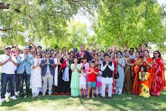
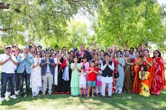

Dubbo Nepalese Commmunity Australia (DNCA) is a not-for-profit organisation located in dubbo. It was established in 2015 to provide support among Nepalese people in Dubbo. One of their most frequent events is the blood donation. Around 25 members participated in the blood donation on the 26th of February, 2025. Its current president is Rajiv Bhattarai,the Vice President being Santosh Koirala, the Sectretary is Suresh Ghimire with Sarmila Maharjan as the Treaurer. DNCA has also collabed with ORISCON in events such as the Holi Mela, which in 2025, attracted over 800 people. DNCA has had members contribute in ORISCON events such as Hues of Harmony and the ORISCON Gala Nite. “Our aim is to celebrate our Nepalese heritage while also promoting multiculturalism,” said Sunil Bhandari, the former president of DNCA. Nepalese is the most spoken language in Dubbo with the population coming in second.
 
